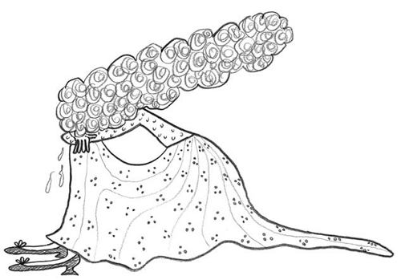

Grandes guerras se publican
en la tierra y en el mar,
y al conde Flores le nombran
por capitán general.
Lloraba la condesita,
no cesaba de llorar:
acaban de ser casados
y se tienen que apartar.
¿Cuántos días, cuántas noches
Piensas estar por allá?
Deja los meses, condesa,
por años debes contar,
si a los tres años no vengo
viuda te puedes llamar.
Pasan los tres y los cuatro,
nuevas del conde no hay;
ojos de la condesita
no cesaban de llorar.
Un día estando a la mesa
su padre le empezó a hablar:
Condes y duques te piden;
te debes, hija, casar.
No lo quiera el Dios del cielo
que yo me vuelva a casar:
carta en mi corazón tengo
que don Flores vivo está.